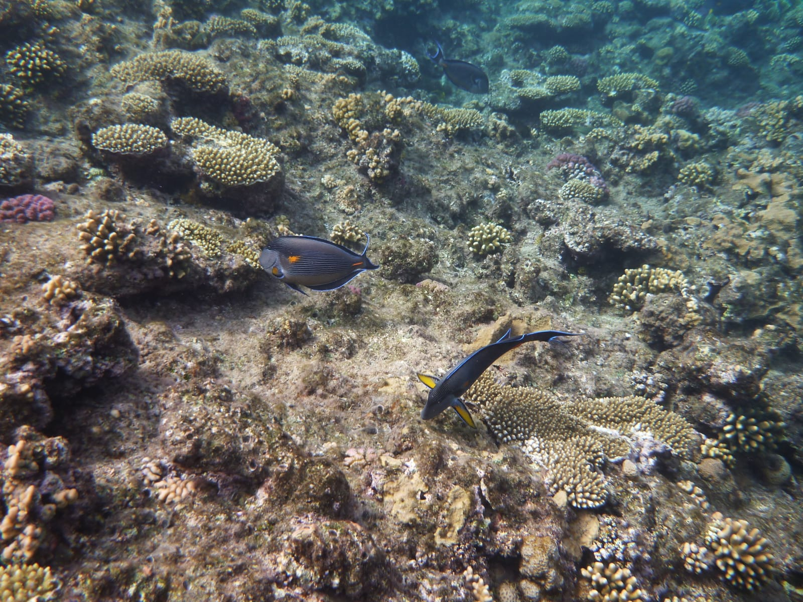

01
01
BEACHES & ADVENTURE
Hurghada
A lively coastal destination known for its beautiful beaches, boat trips, snorkeling, and colorful coral reefs.
EGYPT'S LIVING UNDERWATER TREASURE
Explore crystal-clear waters, vibrant coral reefs, and incredible marine life along Egypt's eastern coast.
The Red Sea is one of the world's most remarkable marine environments, celebrated for its crystal-clear waters, spectacular coral reefs, and extraordinary biodiversity. Along Egypt's eastern coast, it offers a fascinating underwater world full of color and natural beauty.

From colorful reef fish and graceful sea turtles to dolphins moving through open waters, the Red Sea is full of marine wonders. Its coral reefs provide food, shelter, and breeding grounds for countless species, making their protection essential for preserving this unique ecosystem.
Protecting the Red Sea today means preserving its beauty and biodiversity for future generations.
The Red Sea brings together natural beauty, scientific discovery, and unforgettable experiences. Explore its underwater wonders and discover why this remarkable ecosystem deserves our care and attention.

Millions of years ago, powerful forces deep inside the Earth began pulling the African and Arabian tectonic plates apart. Over time, a long basin formed between them.
Seawater gradually filled this basin, creating the Red Sea we know today. The movement of these plates continues to shape the region, making the Red Sea a fascinating place for science and nature.
The Red Sea lies between northeastern Africa and the Arabian Peninsula, connecting remarkable landscapes with a rich underwater world.
From lively beaches to peaceful shores, explore the coastal destinations where turquoise waters, coral reefs, and unforgettable views come together.
01
A lively coastal destination known for its beautiful beaches, boat trips, snorkeling, and colorful coral reefs.
 02
02
A modern coastal resort north of Hurghada, famous for its lagoons, marinas, water activities, and relaxed atmosphere.
 03
03
A coastal destination south of Hurghada, offering access to diving sites and opportunities to explore marine life.
 04
04
A wonderful choice for nature lovers, with coral reefs, clear lagoons, and nearby natural areas worth exploring.
YOUR UNDERWATER JOURNEY
Every journey beneath the waves reveals something extraordinary. Explore the coral reefs, meet fascinating marine creatures, and discover how to protect this natural treasure.
Discover the living underwater landscapes of the Red Sea and understand how coral reefs support marine biodiversity and create habitats for countless sea creatures.
Discover the reefs →Explore the fascinating world of Red Sea wildlife, from graceful sea turtles and dolphins to the colorful fish that bring its coral reefs to life.
Meet the creatures →Understand the challenges facing the Red Sea and discover practical ways to reduce pollution, respect marine wildlife, and help preserve this natural treasure for future generations.
Make a difference →